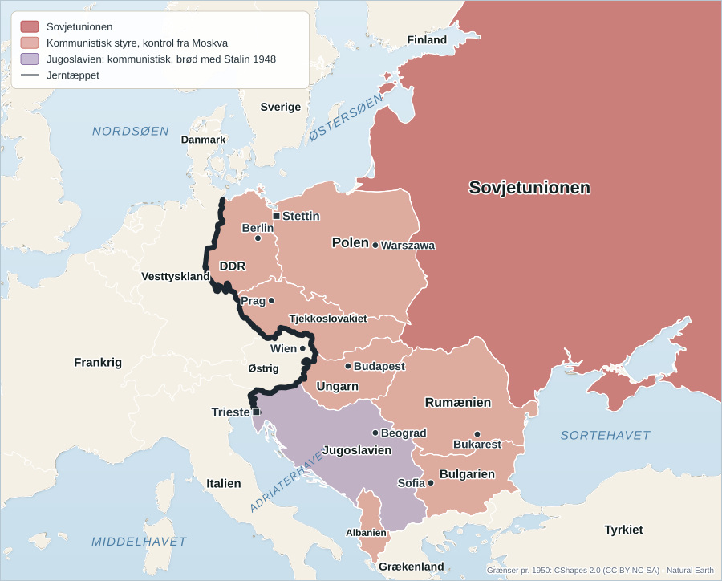

Modul 4: Jerntæppet sænker sig
Dagens problemstilling: Hvordan blev Europa delt efter 1945, og hvordan talte Churchill og Stalin om det?
Lektie
Vores verdenshistorie 3: fra Forhandling af freden til og med Jerntæppet i Europa med kilde 28 og 29. Spring kilde 26 og 27 over.
I timen
- Modul 3 kort: sandt eller falsk.
- Fra allierede til fjender: De tre store, Jalta og Potsdam og folkedemokratierne.
- Jerntæppet: Churchills tale (kilde 28) og Stalins svar (kilde 29) i en diskursanalyse.
- Plakaten fra 1950 og en fælles problemstilling til de tre kilder.
Du får arbejdsarket på papir i timen. Når en slide siger Skriv på arket, skriver du stikord i feltet.
